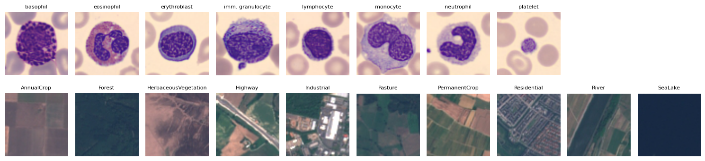

Deep Learning for Scientific Discovery, Jagiellonian University. Author: Marcin Płodzień.
The convolutional neural network (CNN) with global average pooling of the blood-cell notebook, Model E there, reaches \(93\%\) test accuracy on BloodMNIST. That number was measured on test images that come from the same source as the training images: the same hospital, the same staining, the same microscope. It does not tell us how the network behaves on inputs of any other kind. Three situations that the test accuracy does not cover are probed here.
First we show the blood-cell network inputs from outside its training distribution, satellite images and random noise. The network has no way to answer “this is not a blood cell”: it must name one of the eight cell types, and we measure how confident it is when it does so. Second, we shift the input distribution in a milder way, changing the colours of real test cells as a different staining or microscope would, and follow the accuracy. Third, we build a shortcut on purpose: a small dark square is put in the corner of every training image of one class, a network is trained on these images, and we test it on clean images and on images of other classes that carry the square.
Everything runs on a CPU. The trained Model E of the blood-cell notebook is downloaded once and loaded.
Data and the trained network
The blood-cell images are the \(64\times64\) version of BloodMNIST (J. Yang et al., Scientific Data10, 41 (2023), doi:10.1038/s41597-022-01721-8), built from the microscope images of A. Acevedo et al., Data in Brief30, 105474 (2020), doi:10.1016/j.dib.2020.105474. One sample is an RGB image of one peripheral blood cell, with pixel values \(0\dots255\), labelled by clinical pathologists with one of eight cell types; there are \(11\,959\) training, \(1\,712\) validation and \(3\,421\) test images. The foreign inputs of Section 1 come from EuroSAT (P. Helber, B. Bischke, A. Dengel and D. Borth, IEEE J. Sel. Top. Appl. Earth Obs. Remote Sens.12, 2217 (2019), doi:10.1109/JSTARS.2019.2918242): \(27\,000\) RGB patches of \(64\times64\) pixels cut from Sentinel-2 satellite images, each labelled with one of ten land-use classes. Both data sets are described in detail in the blood-cell notebook; the figure after the first cell shows one image of every class of each.
Missing files (the images, the EuroSAT archive and the weights of Model E) are downloaded. The images are standardised with the channel means and standard deviations of the training set, as in the main notebook, and Model E is rebuilt with its trained weights. On real blood cells the loaded network reaches \(0.932\), the test accuracy of the main notebook.
Code
import os, io, zipfile, timeos.environ["CUDA_VISIBLE_DEVICES"] =""import numpy as npimport matplotlib.pyplot as pltimport torch, torch.nn as nn, torch.nn.functional as Ffrom PIL import Imagetorch.set_num_threads(4); device ="cpu"OUT ="figures"; RES ="results"blue, orange, navy ="#005CA7", "#EB6709", "#0A2F5C"nums = {}def clean(ax):for s in ["top", "right"]: ax.spines[s].set_visible(False)import urllib.requestdef fetch(path, url): # use the local file if it exists, otherwise download it once (e.g. in Google Colab)ifnot os.path.exists(path): os.makedirs(os.path.dirname(path) or".", exist_ok=True);print("downloading", url); urllib.request.urlretrieve(url, path)return pathos.makedirs(RES, exist_ok=True); os.makedirs(OUT, exist_ok=True)fetch("data/bloodmnist_64.npz", "https://zenodo.org/records/10519652/files/bloodmnist_64.npz?download=1")fetch("data/bloodmnist.npz", "https://zenodo.org/records/10519652/files/bloodmnist.npz?download=1")fetch("data/EuroSAT.zip", "https://huggingface.co/datasets/torchgeo/eurosat/resolve/main/EuroSAT.zip")fetch(f"{RES}/model_E.pt", "https://raw.githubusercontent.com/MarcinPlodzien/deep-learning-for-scientific-discovery/main/weights/lecture-03/model_E.pt") # Model E of the blood-cell notebookclass_names = ["basophil", "eosinophil", "erythroblast", "immature granulocyte", "lymphocyte", "monocyte", "neutrophil", "platelet"]data = np.load("data/bloodmnist_64.npz")X_train, X_test, y_test = data["train_images"], data["test_images"], data["test_labels"].ravel()mean = X_train.reshape(-1, 3).mean(axis=0) /255; std = X_train.reshape(-1, 3).std(axis=0) /255# as in the main notebookdef to_tensor(X): # uint8 images (n, 64, 64, 3) -> normalised tensor (n, 3, 64, 64) x = torch.tensor(X, dtype=torch.float32).permute(0, 3, 1, 2) /255return (x - torch.tensor(mean, dtype=torch.float32)[:, None, None]) / torch.tensor(std, dtype=torch.float32)[:, None, None]def conv_block(n_in, n_out):return nn.Sequential(nn.Conv2d(n_in, n_out, 3, padding=1), nn.BatchNorm2d(n_out), nn.ReLU(), nn.Conv2d(n_out, n_out, 3, padding=1), nn.BatchNorm2d(n_out), nn.ReLU())class GapCNN(nn.Module): # Model E of the main notebookdef__init__(self, n_channels=3, n_classes=8):super().__init__()self.features = nn.Sequential(conv_block(n_channels, 32), nn.MaxPool2d(2), conv_block(32, 64), nn.MaxPool2d(2), conv_block(64, 128))self.fc = nn.Linear(128, n_classes)def forward(self, x): returnself.fc(self.features(x).mean(dim=(2, 3)))model_E = GapCNN(); model_E.load_state_dict(torch.load(f"{RES}/model_E.pt", map_location="cpu")); model_E.eval()def probabilities(model, X):with torch.no_grad():return torch.cat([model(X[k:k +500]).softmax(1) for k inrange(0, len(X), 500)]).numpy()p_test = probabilities(model_E, to_tensor(X_test))nums["E_test_acc"] =float((p_test.argmax(1) == y_test).mean())print(f"Model E, test accuracy on real blood cells: {nums['E_test_acc']:.3f}")
Model E, test accuracy on real blood cells: 0.932
Code
fig, axes = plt.subplots(2, 10, figsize=(15, 3.6))for c inrange(8): # one blood cell of each type (test set) axes[0, c].imshow(X_test[np.flatnonzero(y_test == c)[0]]); axes[0, c].set_title(class_names[c].replace("immature ", "imm. "), fontsize=8)eurosat = zipfile.ZipFile("data/EuroSAT.zip")first = {} # first patch of each land-use classfor n insorted(n for n in eurosat.namelist() if n.lower().endswith(".jpg")): first.setdefault(n.split("/")[-2], n)for k, (cls, n) inenumerate(sorted(first.items())): axes[1, k].imshow(Image.open(io.BytesIO(eurosat.read(n))).convert("RGB")); axes[1, k].set_title(cls, fontsize=8)for a in axes.ravel(): a.axis("off")plt.tight_layout(); plt.show()

1. Inputs from outside the training distribution
The network ends with a softmax over the eight cell types. Whatever the input, the eight output probabilities \(q_1,\dots,q_8\) are positive and sum to 1, so one class always comes out on top; there is no output that means “this is not a blood cell”. We take the largest of the eight probabilities, \(\max_k q_k\), as the confidence of a prediction and compare it for three kinds of input: the real test cells; 1000 satellite images from EuroSAT (\(64\times64\) RGB tiles of Sentinel-2 images showing forests, rivers, highways and so on, the data set of the second part of the main notebook); and 1000 images of random noise, in which every pixel is drawn uniformly from \(0\) to \(255\).
The histogram shows the distribution of the confidence for each kind of input on a logarithmic density scale. The images on the right are the four satellite tiles the network is most sure about, with the cell type it assigns them, and one noise image.
Code
archive = zipfile.ZipFile("data/EuroSAT.zip")files =sorted(n for n in archive.namelist() if n.lower().endswith(".jpg"))rng = np.random.default_rng(1)pick = rng.choice(len(files), 1000, replace=False)S = np.stack([np.array(Image.open(io.BytesIO(archive.read(files[i]))).convert("RGB")) for i in pick])N = rng.integers(0, 256, size=(1000, 64, 64, 3), dtype=np.uint8)p_sat, p_noise = probabilities(model_E, to_tensor(S)), probabilities(model_E, to_tensor(N))conf = {"real test cells": p_test.max(1), "satellite images": p_sat.max(1), "random noise": p_noise.max(1)}for k, v in conf.items(): nums[f"conf_median_{k}"] =float(np.median(v)); nums[f"conf_above_09_{k}"] =float((v >0.9).mean())print(f"{k:18s}: median confidence {np.median(v):.3f}; fraction with confidence > 0.9: {(v >0.9).mean():.3f}")print("satellite images are called:", {class_names[c]: int(n) for c, n inenumerate(np.bincount(p_sat.argmax(1), minlength=8)) if n})print("noise images are called:", {class_names[c]: int(n) for c, n inenumerate(np.bincount(p_noise.argmax(1), minlength=8)) if n})fig = plt.figure(figsize=(11, 3.6))ax = fig.add_axes([0.0, 0.12, 0.42, 0.78])bins = np.linspace(0.1, 1, 37)for (k, v), col inzip(conf.items(), [blue, orange, "grey"]): ax.hist(v, bins=bins, density=True, histtype="step", lw=2.2, color=col, label=k)ax.set_xlabel("confidence = largest of the 8 probabilities"); ax.set_ylabel("density (log scale)"); ax.set_yscale("log"); ax.legend(frameon=False, fontsize=9, loc="upper left"); clean(ax)ax.set_title("the blood-cell network on three kinds of input", fontsize=11)show =list(np.argsort(-p_sat.max(1))[:4])for j, i inenumerate(show): a = fig.add_axes([0.47+0.135* j, 0.42, 0.12, 0.48]); a.imshow(S[i]); a.axis("off") a.set_title(f"{class_names[p_sat[i].argmax()]}\n{p_sat[i].max():.3f}", fontsize=9)a = fig.add_axes([0.47, 0.0, 0.12, 0.36]); a.imshow(N[0]); a.axis("off")a.set_title(f"{class_names[p_noise[0].argmax()]}{p_noise[0].max():.3f}", fontsize=9)fig.text(0.61, 0.17, "top: the four most confident satellite tiles\nleft: one noise image\n(predicted cell type, confidence)", fontsize=9)plt.savefig(f"{OUT}/limits_ood_confidence.png", dpi=170, bbox_inches="tight"); plt.show()
real test cells : median confidence 0.998; fraction with confidence > 0.9: 0.857
satellite images : median confidence 1.000; fraction with confidence > 0.9: 0.993
random noise : median confidence 1.000; fraction with confidence > 0.9: 1.000
satellite images are called: {'basophil': 5, 'eosinophil': 1, 'erythroblast': 991, 'lymphocyte': 2, 'platelet': 1}
noise images are called: {'basophil': 1000}
/tmp/ipykernel_3908662/2110671245.py:29: UserWarning: FigureCanvasAgg is non-interactive, and thus cannot be shown
plt.savefig(f"{OUT}/limits_ood_confidence.png", dpi=170, bbox_inches="tight"); plt.show()
The network has never seen a satellite image or noise, yet it assigns them cell types, and with high confidence. The median confidence is \(1.000\) for both kinds of foreign input, and \(99.3\%\) of the satellite images and all of the noise images get a confidence above \(0.9\), a larger fraction than for the real test cells (\(85.7\%\)). Almost all satellite tiles (991 of 1000) are called erythroblasts, and every noise image is called a basophil. A high softmax probability measures how well an input matches one class compared with the other seven, not whether the input resembles the training data at all.
2. A different staining
Blood smears are stained before they are photographed, and the colour of the image depends on the stain batch, the protocol and the microscope. We imitate such a change by scaling the three colour channels of the real test images: red by \(1-s\), green unchanged, blue by \(1+s\), for a shift \(s\) from \(0\) to \(0.4\). In a second experiment all three channels are multiplied by a common brightness factor between \(0.7\) and \(1.2\). The cells are the same in every case and only the colours change, so any loss of accuracy is caused by the colours alone.
Code
def stain(X, s): # scale red by (1 - s) and blue by (1 + s); X: uint8 (n, 64, 64, 3) g = np.array([1- s, 1.0, 1+ s])return np.clip(X.astype(np.float32) * g, 0, 255).astype(np.uint8)def brightness(X, b):return np.clip(X.astype(np.float32) * b, 0, 255).astype(np.uint8)shifts = [0.0, 0.05, 0.1, 0.15, 0.2, 0.3, 0.4]; brights = [0.7, 0.8, 0.9, 1.0, 1.1, 1.2]acc_s = [float((probabilities(model_E, to_tensor(stain(X_test, s))).argmax(1) == y_test).mean()) for s in shifts]acc_b = [float((probabilities(model_E, to_tensor(brightness(X_test, b))).argmax(1) == y_test).mean()) for b in brights]nums["stain_shift"], nums["stain_acc"] = shifts, [round(a, 3) for a in acc_s]nums["brightness"], nums["brightness_acc"] = brights, [round(a, 3) for a in acc_b]print("colour shift s:", shifts);print("accuracy :", np.round(acc_s, 3))print("brightness b :", brights);print("accuracy :", np.round(acc_b, 3))fig = plt.figure(figsize=(11, 3.4))for j, s inenumerate([0.0, 0.1, 0.2, 0.4]): a = fig.add_axes([0.0+0.105* j, 0.45, 0.095, 0.45]); a.imshow(stain(X_test[:1], s)[0]); a.axis("off"); a.set_title(f"s = {s}", fontsize=10)fig.text(0.0, 0.3, "the same test cell ("+ class_names[y_test[0]] +"),\nred scaled by 1 - s, blue by 1 + s", fontsize=9)ax = fig.add_axes([0.5, 0.12, 0.22, 0.78]); ax.plot(shifts, acc_s, "o-", color=orange, lw=2); ax.set_ylim(0, 1)ax.set_xlabel("colour shift $s$"); ax.set_ylabel("test accuracy"); ax.axhline(1/8, color="grey", ls=":", lw=1); clean(ax); ax.set_title("staining", fontsize=11)ax2 = fig.add_axes([0.78, 0.12, 0.22, 0.78]); ax2.plot(brights, acc_b, "o-", color=blue, lw=2); ax2.set_ylim(0, 1)ax2.set_xlabel("brightness factor"); ax2.axhline(1/8, color="grey", ls=":", lw=1); clean(ax2); ax2.set_title("brightness", fontsize=11)plt.savefig(f"{OUT}/limits_stain_shift.png", dpi=170, bbox_inches="tight"); plt.show()
/tmp/ipykernel_3908662/2223290882.py:22: UserWarning: FigureCanvasAgg is non-interactive, and thus cannot be shown
plt.savefig(f"{OUT}/limits_stain_shift.png", dpi=170, bbox_inches="tight"); plt.show()
A colour change that a haematologist would hardly notice moves the images away from the training distribution, and the accuracy falls quickly: from \(0.932\) at \(s=0\) to \(0.866\) at \(s=0.05\), \(0.647\) at \(s=0.1\) and \(0.108\) at \(s=0.2\), below the dotted line of guessing among 8 classes. A change of brightness acts in the same way: \(0.654\) for the factor \(0.9\) and \(0.761\) for \(1.1\). The test accuracy of the main notebook was measured on images of the same staining as the training images; it says nothing about the images of another laboratory.
3. A shortcut
A network uses whatever separates the training classes, whether or not it has anything to do with biology. Suppose that, in the training set, every platelet image carries a small dark square in the top-left corner: a marker that, for instance, one laboratory adds to its images, and that laboratory happens to supply all the platelets. We train a small CNN on these images (\(28\times28\) pixels, for speed) and test it in two ways. On clean test images we check whether the platelets are still recognised without the marker; on test images of the other seven types with the square added we check whether they are now called platelets. For comparison, the same network is trained on clean images and given the same two tests.
Code
d28 = np.load("data/bloodmnist.npz")A_tr, a_tr = d28["train_images"], d28["train_labels"].ravel(); A_te, a_te = d28["test_images"], d28["test_labels"].ravel()PLT = class_names.index("platelet")def mark(X): # a dark 4 x 4 square in the top-left corner X = X.copy(); X[:, 1:5, 1:5, :] =20;return Xm28 = A_tr.reshape(-1, 3).mean(0) /255; s28 = A_tr.reshape(-1, 3).std(0) /255def t28(X): x = torch.tensor(X, dtype=torch.float32).permute(0, 3, 1, 2) /255return (x - torch.tensor(m28, dtype=torch.float32)[:, None, None]) / torch.tensor(s28, dtype=torch.float32)[:, None, None]def small_cnn():return nn.Sequential(nn.Conv2d(3, 32, 3, padding=1), nn.ReLU(), nn.MaxPool2d(2), nn.Conv2d(32, 64, 3, padding=1), nn.ReLU(), nn.MaxPool2d(2), nn.Flatten(), nn.Linear(64*7*7, 128), nn.ReLU(), nn.Linear(128, 8))def fit(X, y, epochs=6, seed=0): torch.manual_seed(seed); m = small_cnn(); opt = torch.optim.Adam(m.parameters(), 1e-3); X = t28(X); y = torch.tensor(y, dtype=torch.long)for ep inrange(epochs): perm = torch.randperm(len(X))for i inrange(0, len(perm), 128): j = perm[i:i +128]; loss = F.cross_entropy(m(X[j]), y[j]); opt.zero_grad(); loss.backward(); opt.step()return m.eval()A_tr_marked = A_tr.copy(); A_tr_marked[a_tr == PLT] = mark(A_tr[a_tr == PLT])t0 = time.time()net_clean, net_short = fit(A_tr, a_tr), fit(A_tr_marked, a_tr)torch.save(net_short.state_dict(), f"{RES}/limits_shortcut_cnn.pt"); torch.save(net_clean.state_dict(), f"{RES}/limits_clean_cnn.pt")print(f"two networks trained in {time.time() - t0:.0f} s")def pred(m, X):with torch.no_grad(): return m(t28(X)).argmax(1).numpy()others = a_te != PLTres = {}for name, m in [("trained on clean images", net_clean), ("trained with the marker", net_short)]: p_clean = pred(m, A_te); p_mark = pred(m, mark(A_te)) res[name] =dict(acc=float((p_clean == a_te).mean()), platelet_recall=float((p_clean[a_te == PLT] == PLT).mean()), others_called_platelet=float((p_mark[others] == PLT).mean()))print(f"{name:26s}: clean test accuracy {res[name]['acc']:.3f}; platelets recognised (clean) {res[name]['platelet_recall']:.3f}; "f"other cells WITH marker called platelet {res[name]['others_called_platelet']:.3f}")nums["shortcut"] = resfig = plt.figure(figsize=(11, 3.2))ex = [np.flatnonzero(a_tr == PLT)[0], np.flatnonzero(a_te == class_names.index("neutrophil"))[0]]a = fig.add_axes([0.0, 0.25, 0.14, 0.62]); a.imshow(A_tr_marked[ex[0]]); a.axis("off"); a.set_title("training platelet\nwith marker", fontsize=9)a = fig.add_axes([0.16, 0.25, 0.14, 0.62]); a.imshow(mark(A_te[ex[1]:ex[1] +1])[0]); a.axis("off"); a.set_title("test neutrophil\nwith marker", fontsize=9)ax = fig.add_axes([0.38, 0.15, 0.6, 0.72])labels = ["clean test accuracy", "platelets recognised\n(clean test images)", "other cells with marker\ncalled platelet"]keys = ["acc", "platelet_recall", "others_called_platelet"]; x = np.arange(3)for k, (name, col) inenumerate([("trained on clean images", blue), ("trained with the marker", orange)]): v = [res[name][q] for q in keys]; ax.bar(x + (k -0.5) *0.38, v, 0.38, color=col, label=name)for xi, vi inzip(x + (k -0.5) *0.38, v): ax.text(xi, vi +0.02, f"{vi:.2f}", ha="center", fontsize=9)ax.set_xticks(x); ax.set_xticklabels(labels, fontsize=9); ax.set_ylim(0, 1.35); ax.legend(frameon=False, fontsize=9, loc="upper right", ncol=2); clean(ax)plt.savefig(f"{OUT}/limits_shortcut.png", dpi=170, bbox_inches="tight"); plt.show()
two networks trained in 93 s
trained on clean images : clean test accuracy 0.906; platelets recognised (clean) 1.000; other cells WITH marker called platelet 0.003
trained with the marker : clean test accuracy 0.764; platelets recognised (clean) 0.000; other cells WITH marker called platelet 0.312
/tmp/ipykernel_3908662/2496564787.py:48: UserWarning: FigureCanvasAgg is non-interactive, and thus cannot be shown
plt.savefig(f"{OUT}/limits_shortcut.png", dpi=170, bbox_inches="tight"); plt.show()
The network trained with the marker has learned the marker instead of the platelet. On clean test images it recognises none of the platelets (\(0.000\), against \(1.000\) for the network trained on clean images), and \(31.2\%\) of the cells of the other types that carry the square are called platelets (against \(0.3\%\)). Its clean test accuracy is lower, \(0.764\) against \(0.906\), but nothing in that single number tells us why. In real data such shortcuts are a hospital’s text label on an X-ray, a scale bar, the background of the photograph: anything that happens to correlate with the class in the training set. Class activation maps, and test data from an independent source, are the tools that reveal them.
As an exercise, make the marker smaller (\(2\times2\) pixels) or put it on only half of the platelet images, and check whether the shortcut is still learned.
Collected measurements
The last cell gathers all numbers measured in this notebook, which are the numbers quoted on the slides, in one dictionary and saves it.